هواپیماها همینطوری غیب نمیشوند؛ یکی غیبشان میکند. بیستوسه سال بعد، کارآگاه مایک وارن پروندهی پرواز ۷۴۷ را دوباره باز میکند.
در حال ساخت با Unreal Engine. پلتفرمها و تاریخ انتشار بعداً اعلام میشود.
تریلر FLIGHT 747 را با زیرنویس فارسی پایین همین صفحه ببینید.
داستان
ساعت ۱:۱۷ بامداد، بالای طوفان
پرواز ۷۴۷ خاموش میشود.«هفتچهارهفت، اینجا برج... ترانسپوندرت از رادار پرید.» دو دقیقه بعد، هواپیما از صفحهی رادار محو شده. نه سقوطی، نه لاشهای، نه جوابی.
بیستوسه سال بعد.جسد مردی در شهر پیدا میشود که یک کارت پرواز در جیبش دارد: پرواز ۷۴۷، به تاریخ همان شبی که هواپیما ناپدید شد.
پروندهای که هیچوقت بسته نشد.مایک وارن ردّ ماجرا را میگیرد: پروندههای پدر مرحومش، دفتر شیفتِ کندهشدهی فرودگاه، و دیواری پر از عکسهای شمارهدار.
حقیقت هیچوقت گم نمیشود.فقط گاهی آنقدر دیر برمیگردد که دیگر کسی باورش نمیکند. هر سرنخی که پیدا میکنید، بار دوم معنای تازهای دارد.
شخصیتها
روی هر شخصیت بزنید تا بیشتر بخوانید
کارآگاه
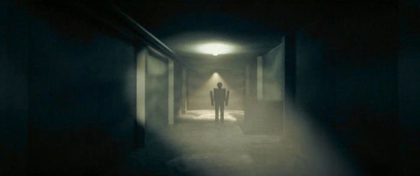
مایک وارن Mike Warrenکارآگاه ارشد جنایی، ۴۲ ساله«یکی صفحه رو کنده، جیم.»کارآگاهی که نقشش را بازی میکنید
پسر آلن وارن، پلیس کهنهکاری که هیچوقت پرواز ۷۴۷ را رها نکرد.
از وقتی اولین جسد پیدا شد، هر شب خواب آن هواپیما را میبیند.
اول به مدرک اعتماد میکند، بعد به آدمها.
آدمهای دور و برش
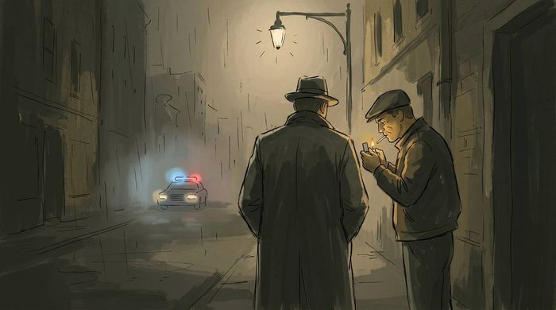
جیم Jimهمکار و بهترین دوست مایک«برو خونه مایک. یه کم بخواب.»شوخطبعترین آدم ادارهی جنایی
سالهاست در همهی پروندهها پشت مایک ایستاده.
در بدترین شبها هم شوخیاش به راه است.
معتقد است گذشته باید همانجا که هست بماند.
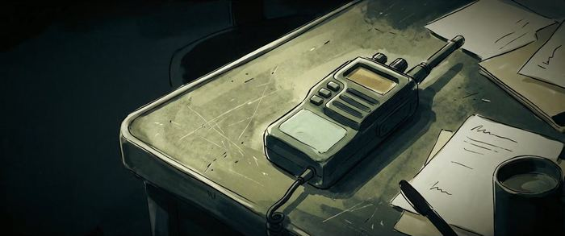
آلن وارن Alan Warrenپدر مایک، پلیس کهنهکار«هواپیما همینجوری غیب نمیشه، پسرم.»صدایش روی نوارهای قدیمی مانده
سالها دنبال این بود که بفهمد واقعاً چه بر سر پرواز ۷۴۷ آمد.
برای پسرش بیشتر سؤال به جا گذاشت تا جواب.
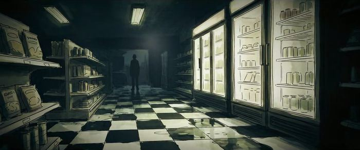
سارا بل Sarah Bellپزشک قانونی«یه کارت پرواز توی جیبش بود.»اولین کسی که میبیند چه بلایی سرشان آمده
همهی جسدهای این پرونده زیر دست او میآیند.
کارت پروازی را پیدا میکند که مایک را به ۷۴۷ برمیگرداند.
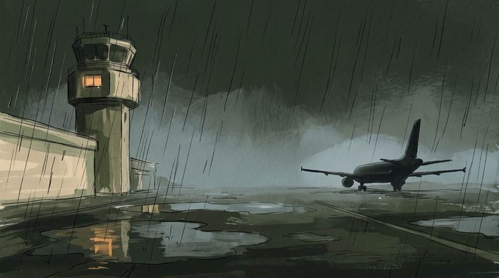
ری هارپر Ray Harperمردی از فرودگاهِ آن سالهادر خانهاش یک دفتر شیفت قدیمی هستیک صفحه از آن شب گم شده
دفترش شاید تنها سندی باشد از اینکه آن شب چه چیزهایی بازرسی شد.
کسی مطمئن شده که یک صفحهاش کنده شود.
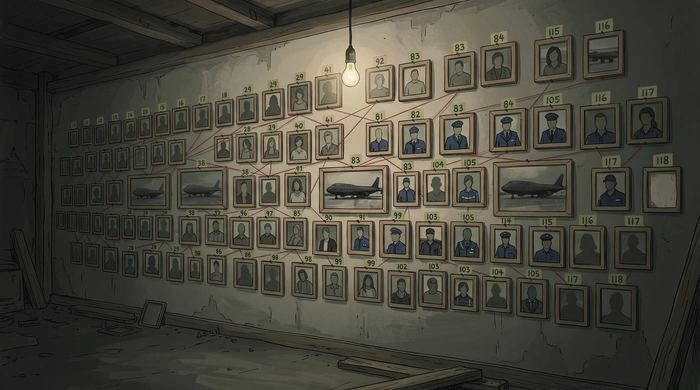
ریچارد بلکوود Richard Blackwoodاسمی از گذشتهپرونده مدام به او برمیگردداینکه او که بود، بخشی از معماست
کمتر کسی دلش میخواهد دربارهاش حرف بزند.
اینکه واقعاً چه کسی بود را باید خودتان کشف کنید.
تریلر
تریلر رسمی، ۱ دقیقه و ۳۵ ثانیه، با زیرنویس فارسی
FLIGHT 747
«هفتچهارهفت، اینجا برج... ترانسپوندرت از رادار پرید.»
هدفون روی گوش، چراغها خاموش.
گالری
تصاویری از تریلر و طرح جلد بازی
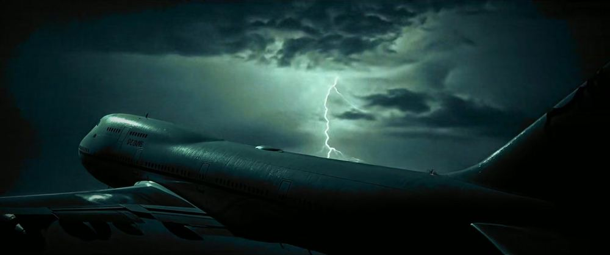
پرواز ۷۴۷، در دل طوفان
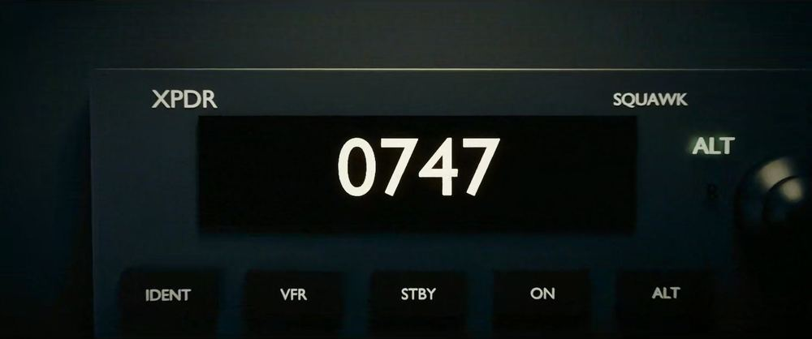
کد ۰۷۴۷، چند ثانیه پیش از خاموشی
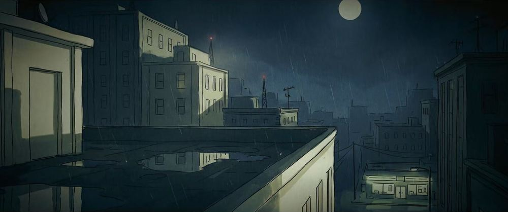
بیستوسه سال بعد
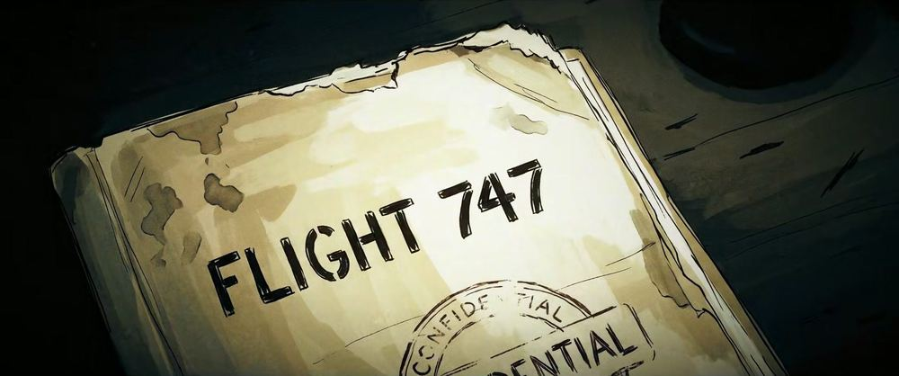
پروندهی محرمانه
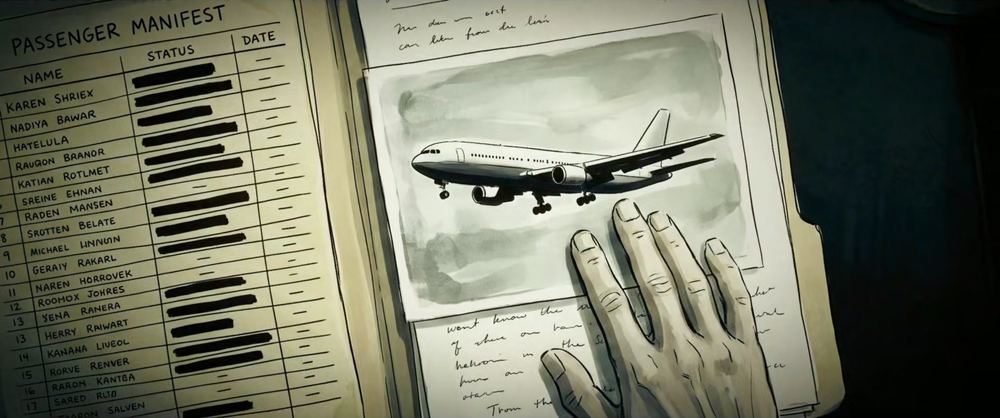
فهرست مسافران
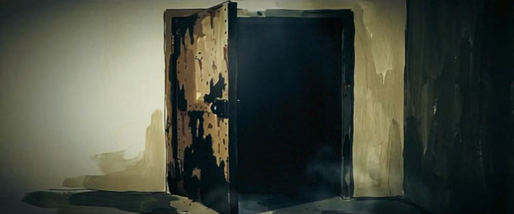
بعضی درها بیدلیل بسته نماندهاند
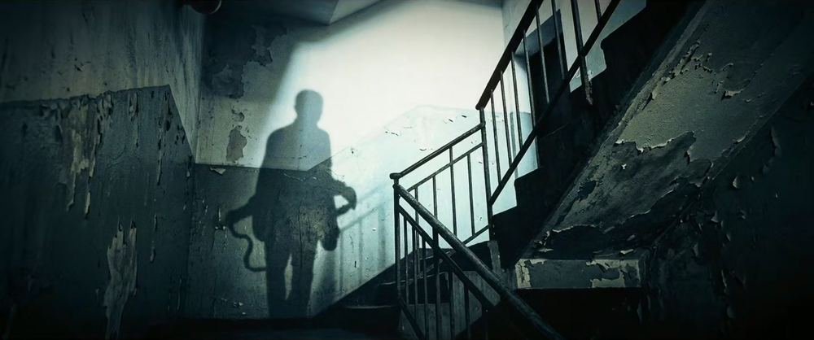
کسی روی پلههاست
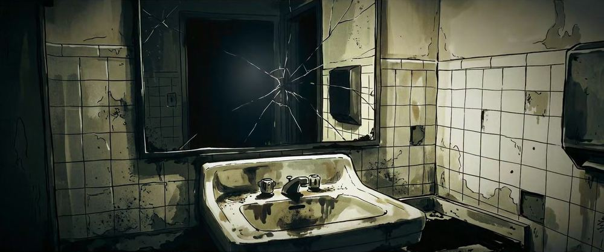
آینه، درست پیش از خاموش شدن چراغها
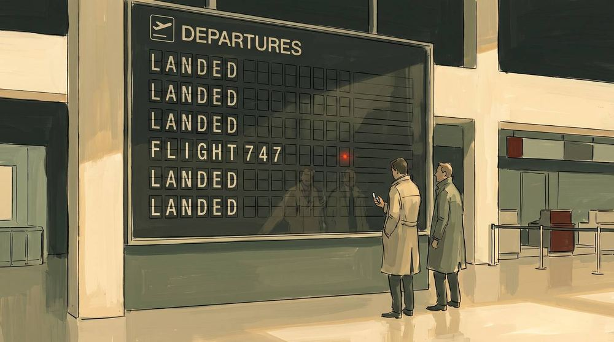
همهی پروازها نشستند. جز یکی.
Mirsel Studio
سازندهی CASE 747
CASE 747 یک بازی مستقل از Mirsel Studio است؛ ساختهی امیر و آیسل، که این استودیو را دوتایی با هم ساختند؛ با موتور Unreal Engine. یک نوآر واقعگرا و پر از توطئه: خیابانهای شبانه، فقط یک نور واقعی در هر اتاق، کفهای خیس، و پروندهای که هر بار بازش میکنید جور دیگری خوانده میشود.
بازی در حال ساخت است. برای تریلر بعدی، پلتفرمها و تاریخ انتشار، Mirsel Studio را دنبال کنید.
Mirsel Studio
همهی حقوق CASE 747 و FLIGHT 747 برای Mirsel Studio محفوظ است، ۲۰۲۶.
تصاویر از تریلر FLIGHT 747 و طرح جلد بازی است.
بازی در حال ساخت است و هر چیزی که اینجا میبینید ممکن است تغییر کند.